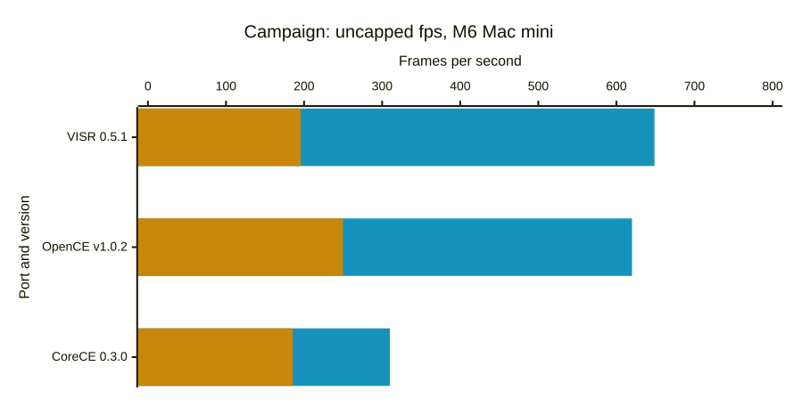

Performance benchmarks
We try to make these comparisons fair, but our numbers or our setup for other projects may be wrong or out of date. Corrections are welcome: open an issue.
Last measured: 2026-10-26. The results spreadsheet holds every number. The methodology is at the bottom of this page.
Mac
Average presentation rate and 1% low rate (the slowest 1% of frames), with the frame cap and vsync off and the matched-stock settings. Each bar pair is the geometric mean of the average and of the 1% low over the suite's windows.

🟦 Average fps 🟧 1% low fps
M6 Mac mini. VISR 0.5.1 (build 20261026.31927, measured 2026-10-26); OpenCE-macOS v1.0.2 (build 2, measured 2026-10-26); CoreCE 0.3.0 (build 44, measured 2026-10-26).
iPhone and iPad
Average presentation rate and 1% low rate (the slowest 1% of frames), with the frame cap and vsync off and the matched-stock settings. Each bar pair is the geometric mean of the average and of the 1% low over the suite's windows.
No results yet for the M1 iPad Pro.
Apple TV
Average presentation rate and 1% low rate (the slowest 1% of frames), with the frame cap and vsync off and the matched-stock settings. Each bar pair is the geometric mean of the average and of the 1% low over the suite's windows.
No reference box is set for Apple TV yet.
Vision Pro
Average presentation rate and 1% low rate (the slowest 1% of frames), with the frame cap and vsync off and the matched-stock settings. Each bar pair is the geometric mean of the average and of the 1% low over the suite's windows.
No results yet for the M2 Vision Pro.
Methodology
Each window's value is the mean over its valid rounds. A bar is the geometric mean of the windows' average presentation rates, drawn beside the geometric mean of their 1% low rates (1000 divided by the 99th percentile interval). When a build was measured on several dates, the newest set is charted. Sets with fewer than three rounds, and targets that could not run, stay in the spreadsheet with their status. On-time share uses the recorded display rate with a 5% interval tolerance, is omitted for uncapped rows and does not establish a display tier. The methods measure different events and are not ranked against one another. The spreadsheet's README tab describes each column.
Suites
- Campaign: every measured window: the opening of a10, the opening of b30, and the b30 beach encounter 90 seconds later (
b30 +90 s). One player, no input, default enemies. Each window warms up for 15 seconds after player readiness, takes a five-second background CPU baseline, then samples for 60 seconds. Three rounds per set, with the frame cap and vsync off and the matched-stock settings for the headline charts. A set with fewer than three valid rounds is marked incomplete. - Multiplayer: two maps, Chill Out and Blood Gulch, each a window of the same length; the suite value is the mean over both maps' windows. No measurements yet.
- Co-op: local split-screen campaign co-op, two players. Enemy scaling is set explicitly to static 1x on every port that has the option: VISR sets
debug.enemy_multiplier = 1, and OpenCE-macOS and CoreCE set their enemies-per-player scaling to static 1x. A port without the option runs its own fixed behavior, and its notes column in the spreadsheet says so. A port without split screen shows "Does not support split screen" and the statusnot_supported; that differs from "not measured", which means the suite has not been run for the build. - Overall: per build, the geometric mean of the suites' average rates and the geometric mean of their 1% low rates, each suite weighted equally, so every suite counts the same whatever its frame-rate scale. A build missing a suite has no overall bar.
A round is rejected when the outside-process CPU average rises more than half a core above the baseline taken before the window. Each round allows three attempts. Rejected attempts appear in the spreadsheet with the status rejected and their reason. This snapshot has 0 rejected attempts.
Suite definitions and the harness are in tools/perf_compare (adapters.py, refresh.py).
Background CPU is sampled for five seconds immediately before each native sampling window. Runs are rejected when average outside-process CPU rises more than half a core above that baseline. Steady background work remains active and may affect these estimates. Each round allows up to three attempts; rejected attempts do not enter the ranges.
Opening runs use a10 and b30 with no input: 15 seconds of warm-up after player readiness, a five-second background CPU baseline, then 60 seconds of sampling. Opening cinematics are included. Native apps use 1280×960 drawables on a 60 Hz display with interpolation. Capped rows request a 60 fps cap and keep each app's other graphics defaults. These runs do not establish combat performance or identical image quality. Player readiness does not align cinematic clocks, so opening sequences can have phase offsets between apps.
Uncapped runs request display.frame_rate = "unlimited" in VISR, display.max_fps = -1 in OpenCE-macOS, and display.frame_limit = 0 in CoreCE, with display.vsync = false and interpolation enabled in each. The frame_mode and delay_s columns of the spreadsheet identify each mode and extra delay after warm-up (0 s is the opening window). The 60 Hz display still limits visible refreshes; presentation intervals do not establish simulation speed or unique displayed frames. Above-refresh trace rates have unverified physical meaning and are not verified submission throughput. The same elapsed window does not prove identical gameplay. Each launch uses fresh isolated data/save folders; OS and driver caches are not reset or equalized.
The matched-stock preset disables antialiasing, replacement HUD/text, and first-person legs in each native app, and each uses direct camera and 128-pixel shadow maps. VISR also uses automatic model LOD, the Xbox-size effect buffer, 1× anisotropic filtering, no replacement textures, and no first-person body. OpenCE-macOS uses native resolution scaling, stock world/weapon FOV, and disables optional per-pixel lighting, weapon shields, and shield glow. CoreCE uses the same options as OpenCE-macOS and model_detail = "stock". Other defaults remain unchanged. VISR uses native Metal and compressed GPU textures; OpenCE-macOS uses ANGLE over Metal. These runs could not verify the other ports' internal filtering, LOD, effect-buffer, or texture-storage policy, so identical image quality remains unverified. Weapon framing and texture filtering still differ visibly. Capped rows keep each app's graphics defaults and are not quality-matched to the matched-stock rows.
Configuration references: VISR settings, OpenCE-macOS v1.0.2 settings, CoreCE graphics settings.
The later b30 window adds 90 seconds after warm-up, reaching the beach encounter at about 110 seconds after player readiness once the CPU baseline is included. It samples 60 seconds with a stationary player and no input. Start/end screenshots qualify the camera location, but AI and combat state can vary between apps and rounds; this is not a deterministic combat replay.
OpenCE web runs import the disc image into each fresh Safari automation session, start the level with the documented ?map=<level>&play, wait 6 seconds for loading, then warm up for 15 seconds and sample requestAnimationFrame callbacks for 60 seconds with no input. The page viewport is 640×480 points, so the game canvas is 1280×960 pixels on the same 60 Hz display as the native rows. The page does not report player readiness, so its sampling window can be offset from the native windows within the opening sequences. Browser callbacks are not the same event as native on-glass intervals.
CoreCE rows come from separate matrices run after the VISR and OpenCE-macOS matrices on the same hosts and dates, so they do not share round rotation with them. CoreCE reads the same maps from a copied folder, because its Mac host does not accept a linked maps folder.
Pre-release main builds are VISR sources measured before a release was tagged. They are kept for history and are not the released product.
Apple's metalperftrace records per-frame on-glass drawable intervals. CPU/GPU durations and aggregate FPS are excluded. Repeated image content is not detected.
Safari callbacks measure browser scheduling and may include repeated game images; they do not prove unique game frames.